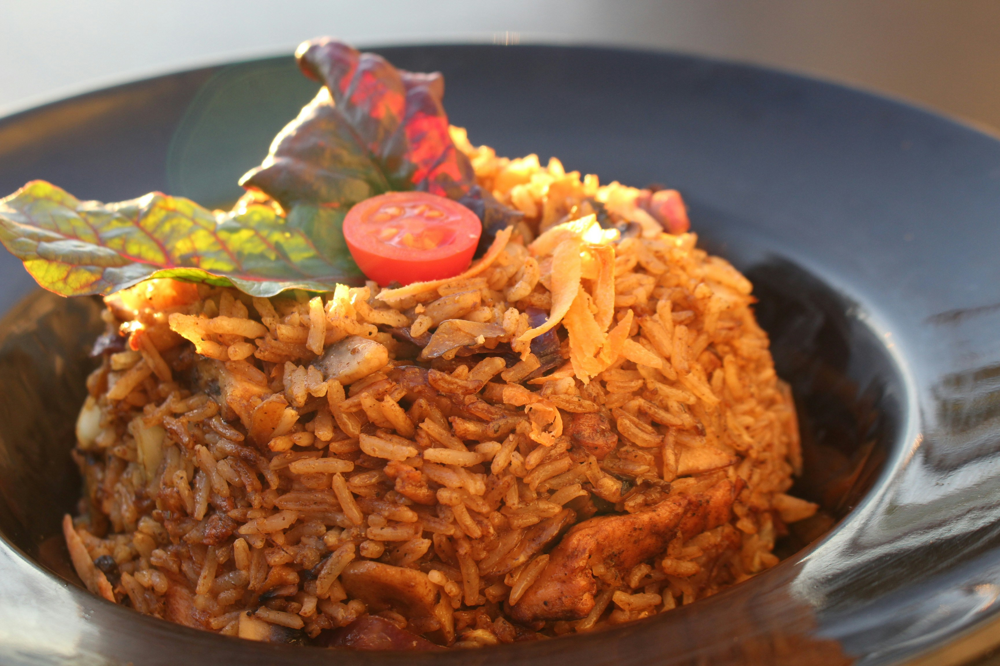

Home
Jollof Rice

Description
j Jollof Rice is a beloved, one-pot classic that stands as the centerpiece of West African cuisine. It is famous for its vibrant orange-red color, achieved by simmering long-grain rice in a rich, flavorful base of blended tomatoes, peppers, and onions.
What truly sets this dish apart is the "smoky" aroma that comes from allowing the bottom layer to slightly singe (the legendary "party rice" flavor). It is often served with fried plantains, grilled chicken, or a crisp side salad, making it a versatile and soulful meal.
Ingredients
- 2 cups parboiled long-grain rice
- 5 large tomatoes and 2 red bell peppers (blended)
- 1 large red onion
- 1/2 cup vegetable oil
- 3 tbsp tomato paste
- 2 cups chicken stock
- Spices: Curry powder, dried thyme, bay leaves, and bouillon cubes
Steps
- Prep the Base: Blend the tomatoes, peppers, and onions into a smooth puree and boil it down until the water evaporates.
- Fry the Aromatics: Heat oil in a large pot and sauté sliced onions until translucent, then add tomato paste and fry for 5 minutes.
- Cook the Sauce: Pour in the boiled tomato mixture and fry until the oil begins to separate.
- Season: Add the chicken stock and spices, then bring to a boil.
- Steam the Rice: Wash the rice thoroughly, add it to the pot, cover with foil and a lid, and steam on low heat until the rice is tender.